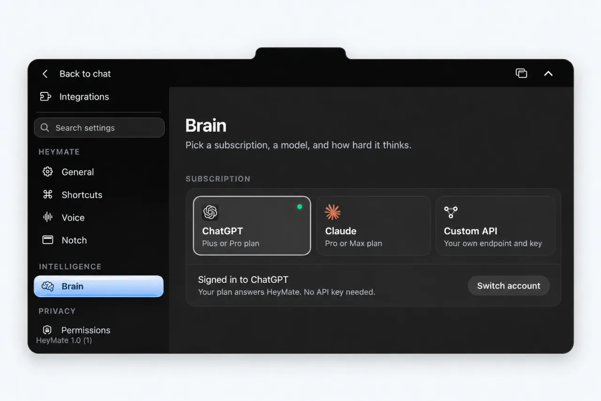

Before you connect an AI provider
You need macOS 14.2 or later on an Apple silicon or Intel Mac. Download HeyMate.dmg from the project’s GitHub releases and drag HeyMate into Applications.
Current builds use a stable self-signed certificate and are not Apple Developer ID signed or notarized. If macOS blocks first launch, review the app and use System Settings > Privacy & Security > Open Anyway only if you choose to proceed.
For questions about your screen, select a vision-capable provider. An AI subscription does not automatically mean every available model supports screen images.
Connect your Claude subscription
- In HeyMate setup, choose Claude.
- Complete the official Claude Code CLI sign-in in your browser. Onboarding can install the CLI if needed.
- Return to HeyMate and try a small text question before testing screen guidance.
If you manage the CLI yourself, the sign-in command documented by HeyMate is claude auth login --claudeai. This route uses your Claude subscription rather than Anthropic Console billing. Your provider’s usage limits still apply.
Connect ChatGPT through Codex
- In HeyMate setup, choose ChatGPT.
- Finish the official Codex CLI sign-in in your browser.
- Return to HeyMate and try a small question.
For a manually installed CLI, use codex login. Signing in to the ChatGPT Mac app does not sign in the Codex CLI. HeyMate needs the CLI connection, so check that sign-in even if ChatGPT already works elsewhere on your Mac.
Try your first screen question
Open an app with sample content, hold Control + Option, and ask: “Explain what I’m looking at and show me the next step.” Grant the Microphone, Accessibility, and Screen Recording permissions needed by the features you use.
Start with guidance while you do the clicking. Computer control is a separate choice that needs your approval. Follow the screen guidance walkthrough for examples and ways to recover from a wrong answer.
If sign-in or screen guidance does not work
- CLI not found: HeyMate discovers CLIs through your login-shell PATH, including Homebrew, npm, Bun, and
~/.local/bin. Check that the selected CLI is installed and available there. - Signed in somewhere else: check the selected CLI’s sign-in, rather than only the ChatGPT or Claude desktop app.
- Text works but screen help does not: check Screen Recording permission and that the selected provider supports vision.
- Provider limit reached: follow your provider’s usage and reset information. HeyMate does not remove those limits.
OpenCode and a custom Anthropic-compatible API are additional routes. Capabilities differ: OpenCode agent jobs can edit files but cannot run shell commands. Optional Apple Intelligence is text-only on supported Macs running macOS 26 or later, and cannot see your screen.
Understand privacy and cost before using real work
Relevant questions and screen context go to your selected provider. Local chat history is separate from the provider’s retention and CLI session history. Some integrations write temporary screenshots. Read HeyMate’s privacy and storage details before using sensitive content.
HeyMate adds no subscription fee and does not meter model use. Provider limits and optional API, voice, and connector charges remain separate. For everyday tasks, continue with the developer, designer, and learning guide.